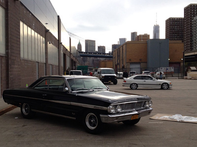

Shoot The Lobster @ NADA NY

Shoot The Lobster presents a group exhibition and collaborative installation on view in a 1964 black Ford Galaxie 500 located outside of the Pier 36 building. The site-specific project features work by Kai Boysen, Nicholas Buffon, Hannah Buonaguro, Henry Codax, Ryan Foerster, Matthew Higgs, Denise Kupferschmidt, Andres Laracuente, Jennie Jeun Lee, Justin Lieberman, Servane Mary, M/L Artspace (Lena Henke and Marie Karlberg), Eli Ping, Ragina Stewart and Zoltog 99. Music and CDs with original artwork by Bad Puppet—band members include Mike Eckhaus, Jeffrey Joyal, Valerie Keane, Bradley Kronz and Win McCarthy. Select Shoot The Lobster merchandise including shirts, mugs, bags, and stickers available for purchase. On view for the duration of the NADA art fair in Pier 36 Parking Lot.
Pier 36 at Basketball City
299 South Street on the East River
New York, NY 10002
OPENING PREVIEW
Friday, May 9: 10am - 2pm
OPEN TO THE PUBLIC
Friday, May 9: 2 - 7pm
Saturday, May 10: 11am - 7pm
Sunday, May 11: 11am - 5pm
XY NAUGHT
A tragicomedy by Jory Rabinovitz
Starring: Jessi Reaves, JPW3, Sam Anderson, Phillip Birch, Joseph Geagan, Sayre Gomez, Frank Haines, Lena Henke, Jeffrey Joyal, Brian Kuzma, Jose Martos, Taylor Trabulus
Orginal score by: Harry Bornstein, Hobby, Mac McFerren, Na Nguzu
For tickets and additional information please visit:
http://www.abronsartscenter.org/performances/xy-naught.html
In celebration of NADA New York and XY NAUGHT there will be an afterparty on Saturday, May 10th starting at 10:30pm with DJ sets by Jon Santos, Max McFerren, Bookworms and a special guest. For location and password please RSVP to party@newartdealers.org
For all inquiries and press requests please email contact@shootthelobster.com or call 212-560-0670.
Shoot The Lobster
contact@shootthelobster.com
www.shootthelobster.com
Current Exhibtions:
New York - 138 Eldridge Street
Toshio Matsumoto: 3 Films (1969-1975)
Luxembourg - 13 Avenue de la Porte Neuve
Sweet Potato
Olga Balema, David Flaugher, Win McCarthy
Dallas - 8687 N. Central Expressway @ Green House Market
Ross Simonini
Digestive Napkins